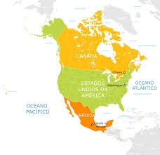

América é um dos cinco continentes do mundo, sendo o maior deles territorialmente de norte a sul. O continente é dividido em três subcontinentes repletos de particularidades.
América é o maior continente em extensão norte–sul localizado no Hemisfério Ocidental e compreende uma área total de 42.189.120 km2. O continente é habitado por cerca de 902.892.047 pessoas, e nele são faladas diversas línguas, como espanhol, inglês, português, francês, neerlandês e línguas nativas. O continente é constituído por 35 países e 18 territórios independentes. Os países são banhados pelos oceanos Atlântico e Pacífico.
Esse enorme território é dividido em subcontinentes: América do Norte, América Central e América do Sul. Alguns estudiosos e organizações, como a Organização das Nações Unidas (ONU), consideram apenas a divisão em América do Norte e América do Sul, considerando que ambas são ligadas por um istmo (estreita faixa de terra que liga duas áreas de maior extensão).
Outra divisão da América é conhecida como América Latina, uma região que corresponde aos países que falam as línguas derivadas do latim, como o português e o espanhol. Basicamente, a América Latina abrange a região dos países pertencentes à América Central e à América do Sul colonizados pelos portugueses e espanhóis.
O continente americano era habitado por nativos até a chegada dos europeus. Espanhóis, portugueses, holandeses, franceses e outros povos do Velho Mundo colonizaram a América, e a miscigenação deles com os povos nativos deu origem à população atual do continente. A independência dos países da América do Norte iniciou-se por volta de 1776, já a da América Latina iniciou-se no decorrer do século XIX.
América do Norte foi inicialmente explorada pelos espanhóis, por volta de 1942. Franceses e ingleses também colonizaram regiões desse subcontinente, o qual se localiza em uma área de 24.709.000 km². Suas fronteiras estão delimitadas, a leste, pelo Oceano Atlântico, a oeste, pelo Oceano Pacífico; já ao sul, estão ligadas à América Central, e ao norte, estão ligadas ao Ártico.
Os países que formam o subcontinente são:
Alguns territórios dependentes também se encontram nele, ao todo são quatro dependências. Vivem nesse subcontinente 579.024.000 habitantes. Os países da América do Norte fazem parte de alguns acordos, como o Nafta, substituído em 2018 pelo USMCA (conhecido como Nafta 2.0) — um tratado de livre comércio entre as nações.
 Menu